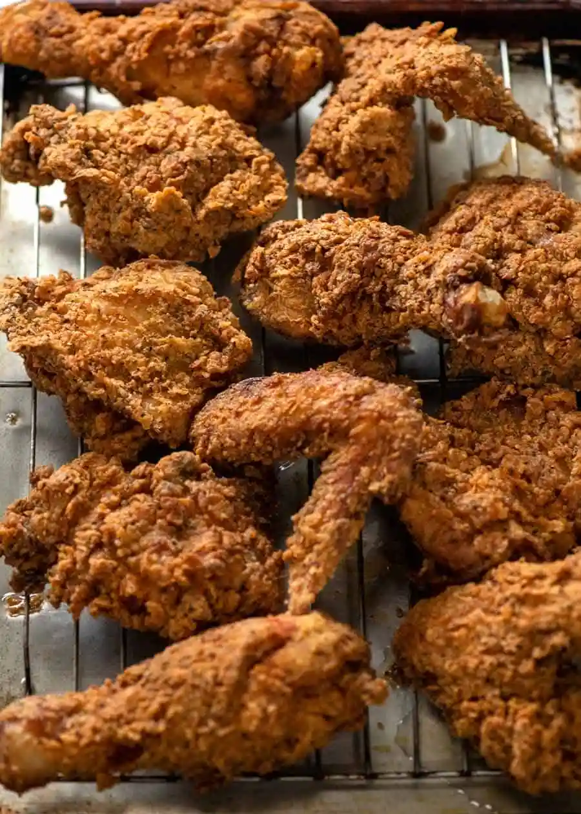

Fried Chicken

Description
This homemade fried chicken surpasses KFC's in texture and flavor. The crispy crust lacks any sogginess, with a thick and rugged texture that adds extra crunch. The seasoning is perfectly balanced, enhancing the tender and juicy buttermilk-marinated meat. The deep golden color adds to its appeal, making it irresistible to fried chicken enthusiasts.
Ingredients
- 1.8kg bone in, skin on small thighs (< 200g), drumsticks, whole wings, breast (< 200g)
- 1.5 - 2 litres vegetable oil
Buttermilk Marinade
- 1 cup buttermilk
- 1 tbsp salt
- 1 egg
Fried Chicken Breading
- 2 1/4 cups flour, plain/all purpose
- 3/4 cup corn flour/cornstarch
KFC 11 Secret Herbs and Spices
- 3 tsp salt
- 3/4 tsp celery salt
- 1.5 tbsp black pepper
- 1.5 tsp sweet paprika
- 1/2 tsp cayenne pepper
- 1.5 tsp onion powder
- 3 tsp garlic powder
- 1 tsp mustard powder
- 3/4 tsp ginger powder
- 1.5 tsp dried thyme
- 1.5 tsp dried oregano
Steps
Buttermilk Marinade Chicken:
- Mix Marinade in a bowl until salt dissolves.
- Pour over chicken in ziplock bag, massage to coat chicken. Press out excess air, seal, refrigerate 12 to 24 hours, turning once or twice.
- Pour chicken and marinade into large bowl.
Breading mixture:
- Whisk together Breading and all KFC Secret Herbs & Spices.
- Drizzle 4.5 tablespoons of Marinade into flour mixture. Use fingers to rub in so you get lots of pea sized lumpy bits all throughout (this creates extra super crunchy craggy bits).
- Spread out in a shallow dish or pan (easier to work with).
Prepare to cook (work in specified order of steps):
- Preheat oven to 80°C/175°F and place rack on tray - to keep chicken warm.
- Add oil to a wide, heavy based pot to a depth of 6 cm
- Heat oil over medium to medium high heat to 180°C - maintain temp as best you can
Breading:
- Start with thighs and drumsticks, wings next and cook breast last.
- Squidge a piece of chicken in remaining marinade, place in flour.
- Coat well, pressing very firmly to adhere. Transfer to plate.
- Coat 2 or 3 more pieces - just for one cooking batch, covering oil surface in single layer.
Frying:
- Carefully place chicken in oil - it will bubble energetically but it will not spit.
- Once chicken is in, oil temperature should drop to 150°C/300°C - adjust heat to target this.
- DO NOT TOUCH chicken for 2 minutes - to let the crust bond with the chicken skin. After this, you can move them around but oil should be deep enough that you do not need to flip (but you can if you want!).
- Thighs and drumsticks - cook for 8 minutes (wings for 5 minutes), or until deep golden brown and internal temperature at thickest part is 75°C.
- Breast - fry for 6 minutes or until internal temperature at thickest part is 65°C (time depends on size).
- Place onto rack and keep warm in oven. Repeat with remaining chicken, coating each batch just prior to cooking.
- Serve immediately!